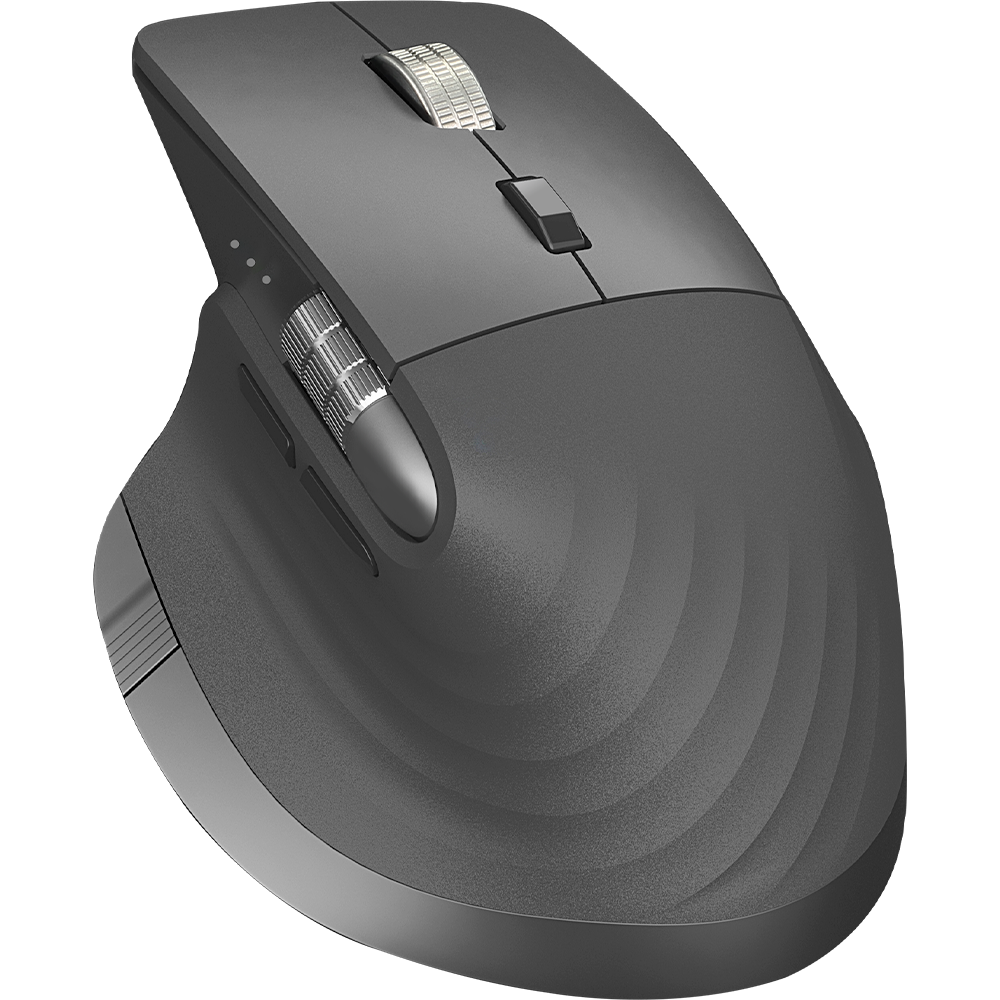

MAKE IT YOURS
Small moves. Better flow.
Your everyday actions, right at your fingertips.
Your mouse
QZ30
Looking for a compatible USB receiver.
A detected receiver does not confirm that the mouse is powered on. Its USB ID is shared by several models. Bluetooth identification is not verified in this release; use the USB receiver.
Button assignments
Less reaching. More doing.
Side wheel and button 4 use receiver input on Windows. macOS currently supports OS scroll events; button 4 is unavailable there.
Put your shortcuts to work
Save an assignment to get started.
While enabled, mappings apply to all mice and trackpads on this computer. Close the original mouse utility first.
App behavior
Checking login settings…
Login launch stays in the tray or menu bar. Closing the window keeps QZ Flow running. Use the tray or menu-bar menu to Open, Pause/Resume mappings, or Quit.